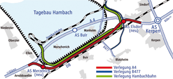

Die Verlegung der Hambachbahn
Klicken Sie unten rechts, um die Originalgröße zu sehen. Die bisherige Trasse der Hambachbahn verläuft auf ca. 9 km durch das Abbaugebiet und wird 2014 vom Tagebau in Anspruch genommen. Um die Bahnstrecke auch weiterhin nutzen zu können, muss sie nach Süden verlegt werden. Die neue Trasse beginnt weiterhin beim Kohlebunker östlich der Ortslage Niederzier und verläuft nach Süden. Im Bereich der L 257 zwischen Arnoldsweiler und Morschenich schwenkt sie nach Osten. Hier wird eine Parallellage mit der zukünftigen A 4n und der DB-Strecke Köln – Aachen erreicht. Bei Kerpen-Manheim dreht die Trasse in Richtung Norden und verläuft um das Waldgebiet Steinheide herum. In Höhe des Kreuzungsbauwerkes mit der K 34 bei Mönchskaul mündet die Neubaustrecke in die vorhandene Hambachbahn. Die Gesamtlänge der verlegten Hambachbahn beträgt ca. 15 km.
{kind=link}
Verkehrsminister Michael Groschek gibt die neue Trasse der Hambachbahn frei
Film Verlegung der Hambachbahn
Umschluss der alten Strecke auf die neue Trasse
Verlauf der Bauarbeiten:
Die neue Trasse der Hambachbahn wurde vollständig in einem etwa 8 bis 15 m tiefen Einschnitt hergestellt. Sie ist zweigleisig, elektrifiziert und mit neuester Signal- und Stellwerkstechnik ausgestattet.
Nach der Baufeldfreimachung und den notwendigen archäologischen Unter-suchungen wurden zunächst die Brückenbauwerke errichtet. Anschließend wurden bis November 2011 die umfangreichen Aushubarbeiten ausgeführt. Nach der Herstellung des Erdbauplanums und der Entwässerungseinrichtungen wurden die Signalkabel verlegt, die Fahrleitungsmaste gesetzt und die Hochbauten für die Signaltechnik errichtet. Der Gleisoberbau erfolgte von der Schiene aus und wurde planmäßig im Sommer 2012 fertiggestellt. Der Beginn der Umschlussarbeiten der alten Strecke auf die neue Hambachbahntrasse war im Januar 2013.
Während der gesamten Umschlussphase musste die Kohleversorgung der Kraftwerke per Bahn gewährleistet sein. Um die Kohletransporte aufrecht zu erhalten, konnte der Umschluss nur gleisweise unter dem „rollenden Rad“ erfolgen.
Die Bauarbeiten sind mit der Inbetriebnahme der neuen Trasse im Oktober 2013 abgeschlossen.
Insgesamt wurden Bau- und Planungsleistungen im Gesamtvolumen von rund 130 Mio. Euro vergeben.
In Kürze erfolgt der Rückbau der alten Bahnstrecke, die nicht mehr benötigt wird.